实验 8 补充 2：分流规则抽样审查
第 1b 步补充页：在检测器掩码处裁开候选后的 SECOND 测试 ② 例图（第 1 步去精修、裁开后改为补漏的全部 3 例，以及裁开后仍去精修的 8 例）。
候选 c 取完整掩码（成员原始掩码之并，同 exp8s 第 6 步）；D 为检测器 0.5 掩码。
r = |D ∩ c| / |c|，k = D ∩ c 中 ≥ 5 像素的 8 连通域个数。规则 R(0.1)：r < 0.1 去补漏，否则去精修。
每个漏检连通域由覆盖其像素最多的候选决定去向；没有候选覆盖记为未覆盖。
格同 exp8s batch34（③ 按检测器对目标的覆盖率再分 10–30% 与 ≥ 30%）。不训练，不跑任何模型。
每行从左到右：T1、T2、真值（白色为该目标，灰色为其他真值）、检测器预测、叠加图（底图 T2）、整图小图（黄框为裁块）。
裁块以目标为中心，边长取目标外接框长边的 1.5 倍（至少 64 像素）；候选轮廓在裁块内截断，整图小图显示完整候选。
该漏检连通域所属真值目标其余部分（细轮廓）检测器 0.5 掩码 D（半透明）决定去向的候选的完整掩码轮廓
SECOND 测试
抽样种子 20261024；规则 R(0.1)；候选集为默认四源 D1 全部候选。
① → 补漏（共 716 个连通域，抽 4 个）
test_1038.png①去向：补漏候选 r = 0.013，k = 1，覆盖该连通域 390 px · 目标面积 403 px · 连通域 393 px · 检测器对目标的覆盖率 2.5% · 语义转移 non-vegetated surface → building · 裁块 y=181 x=265 边长 64，放大 3×
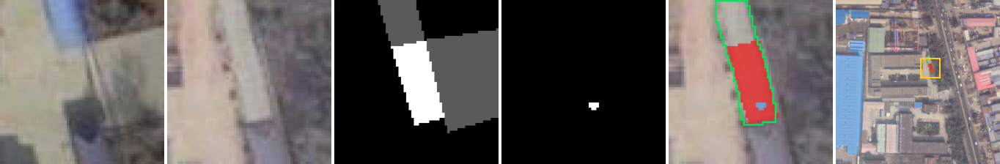
test_1684.png①去向：补漏候选 r = 0.000，k = 0，覆盖该连通域 133 px · 目标面积 171 px · 连通域 171 px · 检测器对目标的覆盖率 0.0% · 语义转移 building → non-vegetated surface · 裁块 y=93 x=232 边长 64，放大 3×
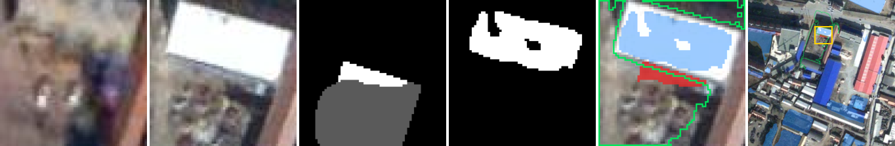
test_620.png①去向：补漏候选 r = 0.004，k = 1，覆盖该连通域 2207 px · 目标面积 2556 px · 连通域 2535 px · 检测器对目标的覆盖率 0.8% · 语义转移 non-vegetated surface → low vegetation · 裁块 y=413 x=142 边长 99，放大 2×
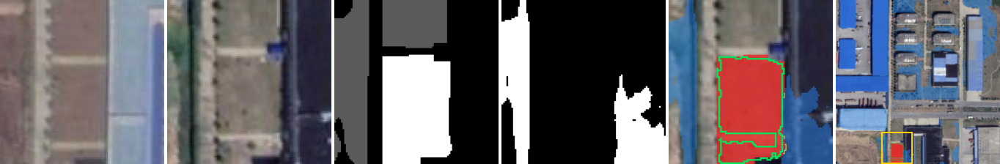
test_687.png①去向：补漏候选 r = 0.044，k = 2，覆盖该连通域 1133 px · 目标面积 1213 px · 连通域 1154 px · 检测器对目标的覆盖率 4.9% · 语义转移 non-vegetated surface → building · 裁块 y=197 x=266 边长 75，放大 2×
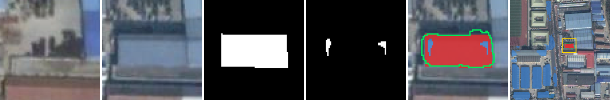
① → 精修（共 2568 个连通域，抽 4 个）
test_400.png①去向：精修候选 r = 0.804，k = 7，覆盖该连通域 387 px · 目标面积 472 px · 连通域 437 px · 检测器对目标的覆盖率 7.4% · 语义转移 low vegetation → non-vegetated surface · 裁块 y=0 x=207 边长 64，放大 3×
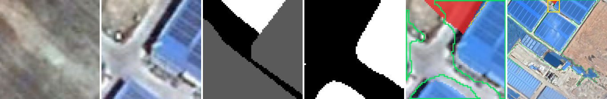
test_490.png①去向：精修候选 r = 0.741，k = 2，覆盖该连通域 81 px · 目标面积 86 px · 连通域 81 px · 检测器对目标的覆盖率 5.8% · 语义转移 non-vegetated surface → building · 裁块 y=430 x=428 边长 64，放大 3×
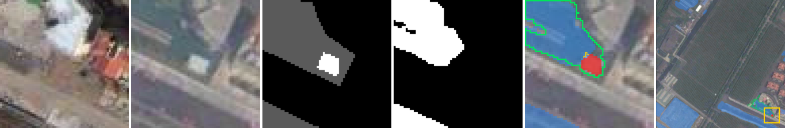
test_548.png①去向：精修候选 r = 0.222，k = 13，覆盖该连通域 4845 px · 目标面积 5149 px · 连通域 5021 px · 检测器对目标的覆盖率 2.5% · 语义转移 non-vegetated surface → tree · 裁块 y=42 x=0 边长 151，放大 1×
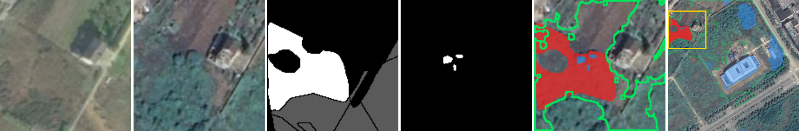
test_618.png①去向：精修候选 r = 0.279，k = 5，覆盖该连通域 848 px · 目标面积 1028 px · 连通域 1003 px · 检测器对目标的覆盖率 2.4% · 语义转移 low vegetation → non-vegetated surface · 裁块 y=0 x=52 边长 147，放大 1×
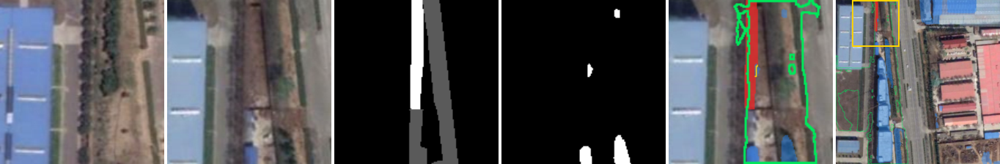
① → 未覆盖（共 0 个连通域，抽 0 个）
无。
② → 补漏（共 6867 个连通域，抽 4 个）
test_1380.png②去向：补漏候选 r = 0.000，k = 0，覆盖该连通域 52 px · 目标面积 177 px · 连通域 177 px · 检测器对目标的覆盖率 0.0% · 语义转移 building → non-vegetated surface · 裁块 y=53 x=404 边长 64，放大 3×
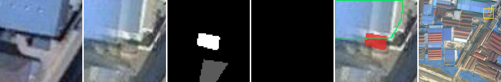
test_1511.png②去向：补漏候选 r = 0.000，k = 0，覆盖该连通域 3459 px · 目标面积 3979 px · 连通域 3979 px · 检测器对目标的覆盖率 0.0% · 语义转移 building → building · 裁块 y=131 x=70 边长 141，放大 1×
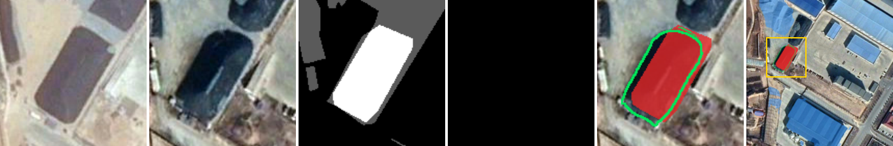
test_1634.png②去向：补漏候选 r = 0.000，k = 0，覆盖该连通域 129 px · 目标面积 132 px · 连通域 132 px · 检测器对目标的覆盖率 0.0% · 语义转移 non-vegetated surface → building · 裁块 y=126 x=244 边长 64，放大 3×
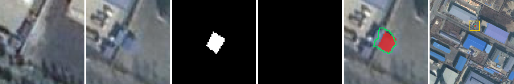
test_55.png②去向：补漏候选 r = 0.000，k = 0，覆盖该连通域 691 px · 目标面积 895 px · 连通域 895 px · 检测器对目标的覆盖率 0.0% · 语义转移 building → building · 裁块 y=448 x=448 边长 64，放大 3×
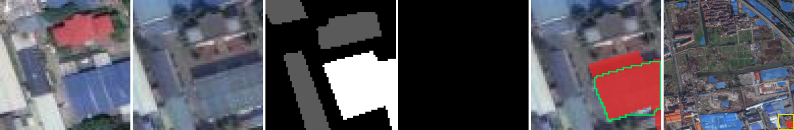
② → 精修（共 4404 个连通域，抽 4 个）
test_1141.png②去向：精修候选 r = 0.298，k = 1，覆盖该连通域 858 px · 目标面积 858 px · 连通域 858 px · 检测器对目标的覆盖率 0.0% · 语义转移 water → low vegetation · 裁块 y=152 x=258 边长 136，放大 1×
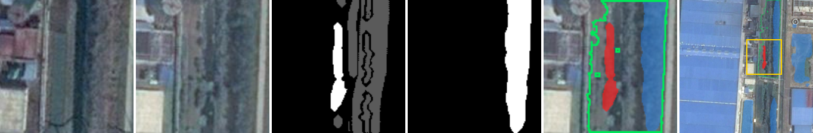
test_259.png②去向：精修候选 r = 0.247，k = 10，覆盖该连通域 143 px · 目标面积 143 px · 连通域 143 px · 检测器对目标的覆盖率 0.0% · 语义转移 tree → non-vegetated surface · 裁块 y=284 x=390 边长 109，放大 2×
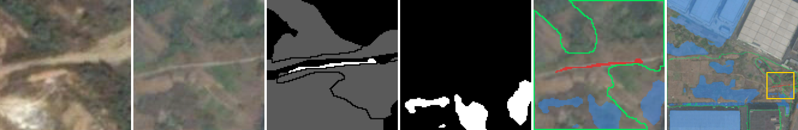
test_855.png②去向：精修候选 r = 0.383，k = 2，覆盖该连通域 246 px · 目标面积 246 px · 连通域 246 px · 检测器对目标的覆盖率 0.0% · 语义转移 building → non-vegetated surface · 裁块 y=172 x=430 边长 64，放大 3×
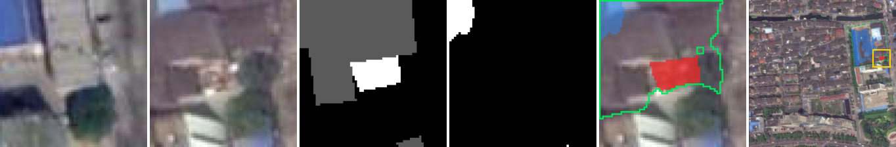
test_978.png②去向：精修候选 r = 0.220，k = 3，覆盖该连通域 89 px · 目标面积 90 px · 连通域 90 px · 检测器对目标的覆盖率 0.0% · 语义转移 low vegetation → non-vegetated surface · 裁块 y=4 x=334 边长 64，放大 3×
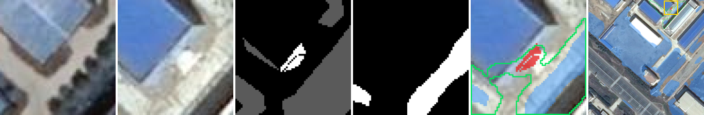
② → 未覆盖（共 404 个连通域，抽 4 个）
test_1514.png②去向：未覆盖没有候选覆盖 · 目标面积 982 px · 连通域 982 px · 检测器对目标的覆盖率 0.0% · 语义转移 non-vegetated surface → low vegetation · 裁块 y=410 x=102 边长 102，放大 2×
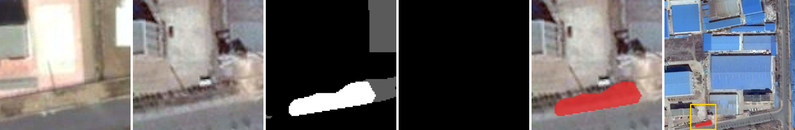
test_432.png②去向：未覆盖没有候选覆盖 · 目标面积 138 px · 连通域 138 px · 检测器对目标的覆盖率 0.0% · 语义转移 non-vegetated surface → low vegetation · 裁块 y=150 x=448 边长 64，放大 3×
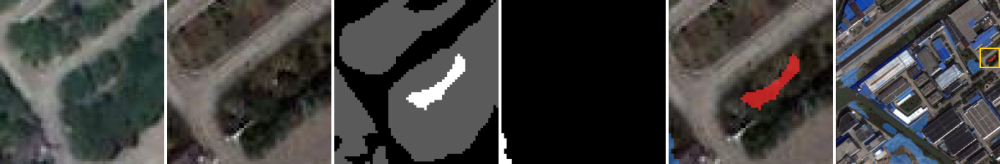
test_448.png②去向：未覆盖没有候选覆盖 · 目标面积 88 px · 连通域 88 px · 检测器对目标的覆盖率 0.0% · 语义转移 non-vegetated surface → tree · 裁块 y=134 x=188 边长 64，放大 3×
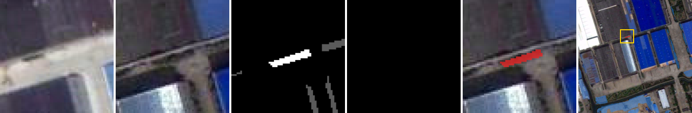
test_66.png②去向：未覆盖没有候选覆盖 · 目标面积 37 px · 连通域 37 px · 检测器对目标的覆盖率 0.0% · 语义转移 tree → non-vegetated surface · 裁块 y=22 x=448 边长 64，放大 3×
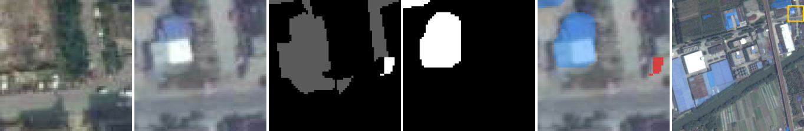
③ 覆盖 10–30% → 补漏（共 326 个连通域，抽 4 个）
test_1281.png③ 覆盖 10–30%去向：补漏候选 r = 0.038，k = 2，覆盖该连通域 179 px · 目标面积 215 px · 连通域 179 px · 检测器对目标的覆盖率 15.8% · 语义转移 building → water · 裁块 y=12 x=8 边长 64，放大 3×
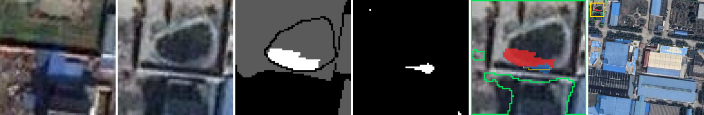
test_1307.png③ 覆盖 10–30%去向：补漏候选 r = 0.096，k = 4，覆盖该连通域 439 px · 目标面积 1038 px · 连通域 888 px · 检测器对目标的覆盖率 14.2% · 语义转移 non-vegetated surface → building · 裁块 y=335 x=182 边长 87，放大 2×
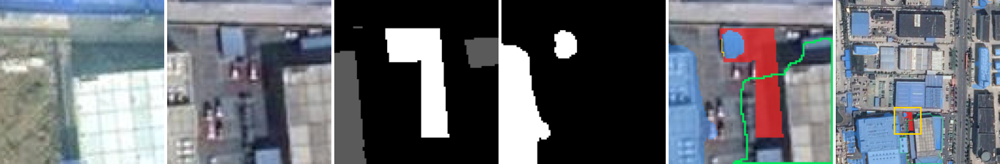
test_212.png③ 覆盖 10–30%去向：补漏候选 r = 0.049，k = 2，覆盖该连通域 10770 px · 目标面积 18539 px · 连通域 13663 px · 检测器对目标的覆盖率 26.3% · 语义转移 tree → low vegetation · 裁块 y=0 x=0 边长 512，放大 1×
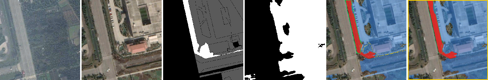
test_403.png③ 覆盖 10–30%去向：补漏候选 r = 0.070，k = 18，覆盖该连通域 2322 px · 目标面积 4193 px · 连通域 3258 px · 检测器对目标的覆盖率 22.0% · 语义转移 non-vegetated surface → low vegetation · 裁块 y=337 x=100 边长 175，放大 1×
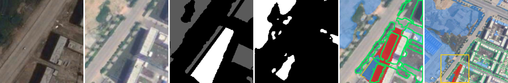
③ 覆盖 10–30% → 精修（共 2387 个连通域，抽 4 个）
test_1140.png③ 覆盖 10–30%去向：精修候选 r = 0.351，k = 13，覆盖该连通域 2043 px · 目标面积 2605 px · 连通域 2043 px · 检测器对目标的覆盖率 20.3% · 语义转移 low vegetation → non-vegetated surface · 裁块 y=213 x=267 边长 118，放大 1×
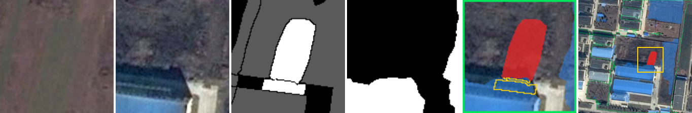
test_505.png③ 覆盖 10–30%去向：精修候选 r = 0.762，k = 2，覆盖该连通域 902 px · 目标面积 1526 px · 连通域 1340 px · 检测器对目标的覆盖率 12.2% · 语义转移 non-vegetated surface → building · 裁块 y=232 x=6 边长 252，放大 1×
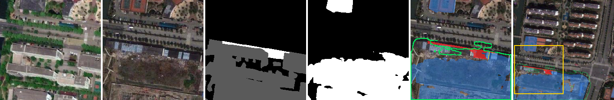
test_58.png③ 覆盖 10–30%去向：精修候选 r = 0.591，k = 8，覆盖该连通域 363 px · 目标面积 447 px · 连通域 376 px · 检测器对目标的覆盖率 15.9% · 语义转移 non-vegetated surface → water · 裁块 y=0 x=172 边长 72，放大 3×
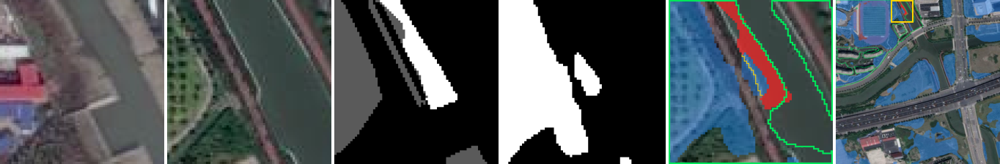
test_648.png③ 覆盖 10–30%去向：精修候选 r = 0.477，k = 26，覆盖该连通域 58 px · 目标面积 73 px · 连通域 58 px · 检测器对目标的覆盖率 19.2% · 语义转移 building → building · 裁块 y=125 x=218 边长 64，放大 3×
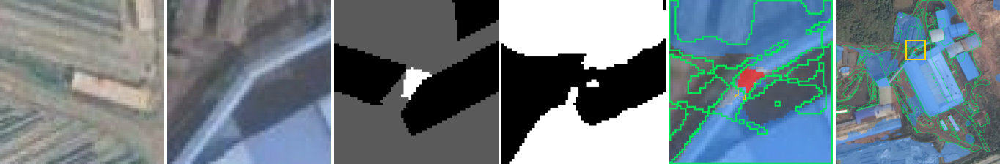
③ 覆盖 10–30% → 未覆盖（共 0 个连通域，抽 0 个）
无。
③ 覆盖 ≥ 30% → 补漏（共 493 个连通域，抽 4 个）
test_1077.png③ 覆盖 ≥ 30%去向：补漏候选 r = 0.078，k = 5，覆盖该连通域 48 px · 目标面积 550 px · 连通域 48 px · 检测器对目标的覆盖率 75.3% · 语义转移 non-vegetated surface → building · 裁块 y=48 x=357 边长 75，放大 2×
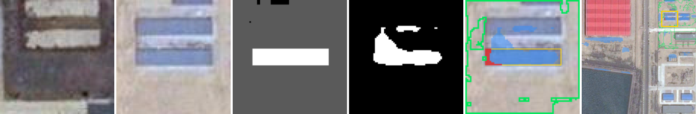
test_299.png③ 覆盖 ≥ 30%去向：补漏候选 r = 0.087，k = 5，覆盖该连通域 25 px · 目标面积 1444 px · 连通域 25 px · 检测器对目标的覆盖率 97.2% · 语义转移 low vegetation → building · 裁块 y=426 x=395 边长 82，放大 2×
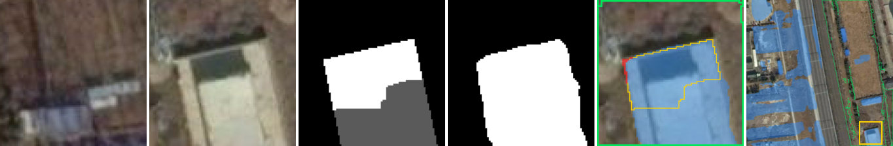
test_672.png③ 覆盖 ≥ 30%去向：补漏候选 r = 0.090，k = 1，覆盖该连通域 85 px · 目标面积 282 px · 连通域 85 px · 检测器对目标的覆盖率 46.5% · 语义转移 non-vegetated surface → building · 裁块 y=0 x=0 边长 64，放大 3×
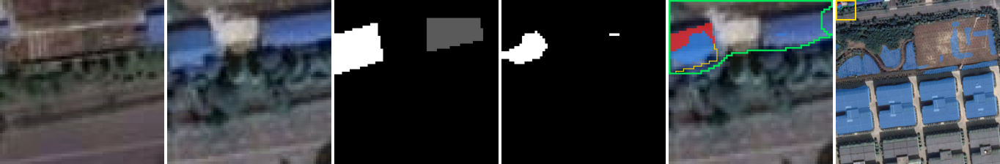
test_791.png③ 覆盖 ≥ 30%去向：补漏候选 r = 0.033，k = 2，覆盖该连通域 471 px · 目标面积 1658 px · 连通域 471 px · 检测器对目标的覆盖率 71.6% · 语义转移 low vegetation → non-vegetated surface · 裁块 y=0 x=342 边长 81，放大 2×
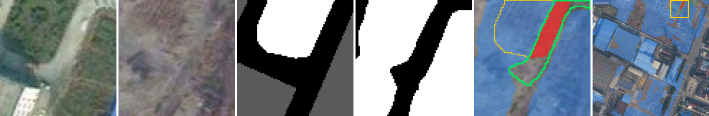
③ 覆盖 ≥ 30% → 精修（共 25606 个连通域，抽 4 个）
test_45.png③ 覆盖 ≥ 30%去向：精修候选 r = 0.393，k = 14，覆盖该连通域 115 px · 目标面积 542 px · 连通域 115 px · 检测器对目标的覆盖率 78.8% · 语义转移 building → non-vegetated surface · 裁块 y=416 x=0 边长 64，放大 3×
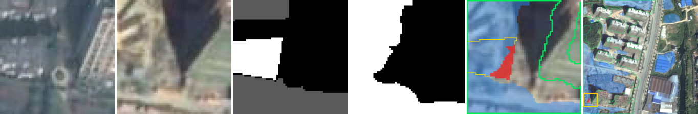
test_657.png③ 覆盖 ≥ 30%去向：精修候选 r = 0.637，k = 2，覆盖该连通域 130 px · 目标面积 1309 px · 连通域 130 px · 检测器对目标的覆盖率 83.4% · 语义转移 building → non-vegetated surface · 裁块 y=166 x=337 边长 175，放大 1×
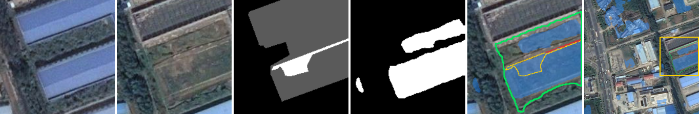
test_709.png③ 覆盖 ≥ 30%去向：精修候选 r = 0.558，k = 14，覆盖该连通域 242 px · 目标面积 1720 px · 连通域 242 px · 检测器对目标的覆盖率 85.9% · 语义转移 low vegetation → building · 裁块 y=0 x=418 边长 94，放大 2×
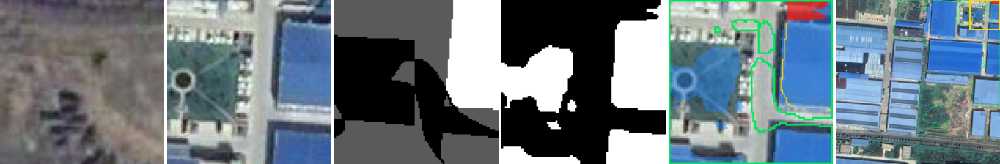
test_893.png③ 覆盖 ≥ 30%去向：精修候选 r = 0.551，k = 6，覆盖该连通域 98 px · 目标面积 4255 px · 连通域 98 px · 检测器对目标的覆盖率 91.8% · 语义转移 non-vegetated surface → building · 裁块 y=172 x=204 边长 163，放大 1×
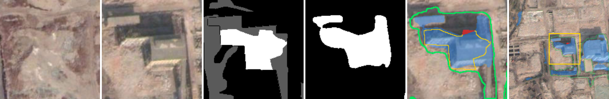
③ 覆盖 ≥ 30% → 未覆盖（共 0 个连通域，抽 0 个）
无。
⑤ 残余 → 补漏（共 4502 个连通域，抽 4 个）
test_1124.png⑤ 残余去向：补漏候选 r = 0.039，k = 1，覆盖该连通域 9 px · 目标面积 2451 px · 连通域 9 px · 检测器对目标的覆盖率 95.7% · 语义转移 building → non-vegetated surface · 裁块 y=310 x=0 边长 139，放大 1×
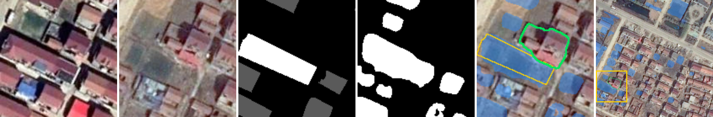
test_1416.png⑤ 残余去向：补漏候选 r = 0.075，k = 1，覆盖该连通域 4 px · 目标面积 4 px · 连通域 4 px · 检测器对目标的覆盖率 0.0% · 语义转移 non-vegetated surface → tree · 裁块 y=350 x=448 边长 64，放大 3×
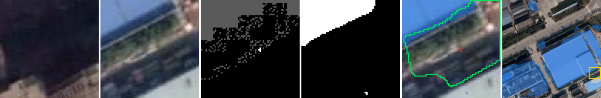
test_1432.png⑤ 残余去向：补漏候选 r = 0.063，k = 8，覆盖该连通域 2 px · 目标面积 2 px · 连通域 2 px · 检测器对目标的覆盖率 0.0% · 语义转移 low vegetation → non-vegetated surface · 裁块 y=245 x=108 边长 64，放大 3×
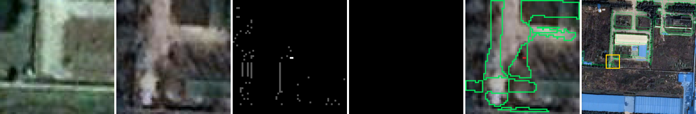
test_902.png⑤ 残余去向：补漏候选 r = 0.000，k = 0，覆盖该连通域 1 px · 目标面积 1 px · 连通域 1 px · 检测器对目标的覆盖率 0.0% · 语义转移 building → non-vegetated surface · 裁块 y=232 x=189 边长 64，放大 3×
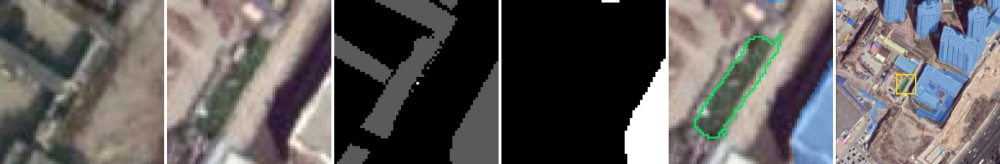
⑤ 残余 → 精修（共 57670 个连通域，抽 4 个）
test_104.png⑤ 残余去向：精修候选 r = 0.493，k = 17，覆盖该连通域 2 px · 目标面积 2 px · 连通域 2 px · 检测器对目标的覆盖率 0.0% · 语义转移 water → low vegetation · 裁块 y=182 x=158 边长 64，放大 3×
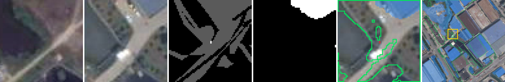
test_1421.png⑤ 残余去向：精修候选 r = 0.125，k = 5，覆盖该连通域 4 px · 目标面积 4 px · 连通域 4 px · 检测器对目标的覆盖率 0.0% · 语义转移 building → non-vegetated surface · 裁块 y=364 x=113 边长 64，放大 3×
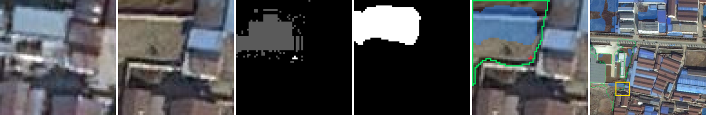
test_1632.png⑤ 残余去向：精修候选 r = 0.597，k = 1，覆盖该连通域 2 px · 目标面积 81 px · 连通域 2 px · 检测器对目标的覆盖率 58.0% · 语义转移 building → building · 裁块 y=88 x=171 边长 64，放大 3×
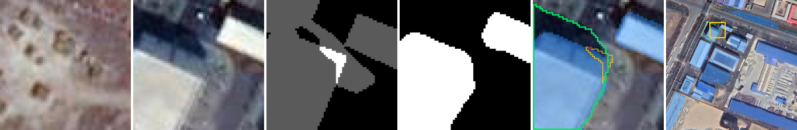
test_432.png⑤ 残余去向：精修候选 r = 0.221，k = 21，覆盖该连通域 1 px · 目标面积 1 px · 连通域 1 px · 检测器对目标的覆盖率 0.0% · 语义转移 tree → low vegetation · 裁块 y=99 x=175 边长 64，放大 3×
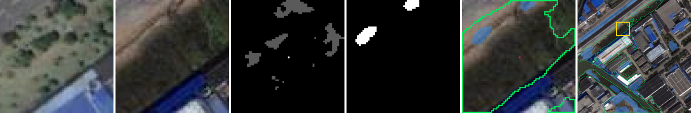
⑤ 残余 → 未覆盖（共 2028 个连通域，抽 4 个）
test_1412.png⑤ 残余去向：未覆盖没有候选覆盖 · 目标面积 5 px · 连通域 5 px · 检测器对目标的覆盖率 0.0% · 语义转移 low vegetation → non-vegetated surface · 裁块 y=157 x=335 边长 64，放大 3×
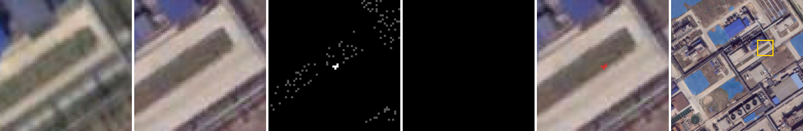
test_1416.png⑤ 残余去向：未覆盖没有候选覆盖 · 目标面积 1 px · 连通域 1 px · 检测器对目标的覆盖率 0.0% · 语义转移 non-vegetated surface → tree · 裁块 y=163 x=262 边长 64，放大 3×
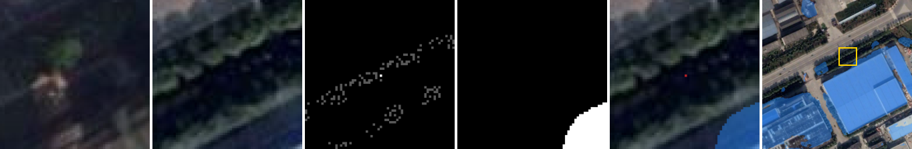
test_1431.png⑤ 残余去向：未覆盖没有候选覆盖 · 目标面积 1 px · 连通域 1 px · 检测器对目标的覆盖率 0.0% · 语义转移 non-vegetated surface → tree · 裁块 y=371 x=0 边长 64，放大 3×
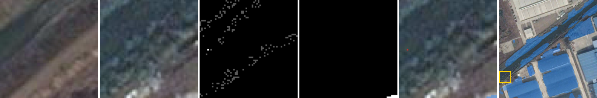
test_1693.png⑤ 残余去向：未覆盖没有候选覆盖 · 目标面积 1 px · 连通域 1 px · 检测器对目标的覆盖率 0.0% · 语义转移 non-vegetated surface → building · 裁块 y=273 x=97 边长 64，放大 3×
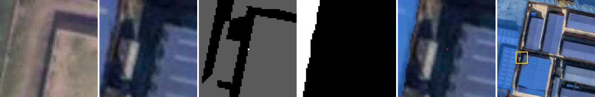
SYSU 测试
抽样种子 20261025；规则 R(0.1)；候选集为默认四源 D1 全部候选。
① → 补漏（共 100 个连通域，抽 4 个）
test_1754.png①去向：补漏候选 r = 0.072，k = 25，覆盖该连通域 59958 px · 目标面积 64708 px · 连通域 59958 px · 检测器对目标的覆盖率 7.3% · 裁块 y=0 x=0 边长 256，放大 1×
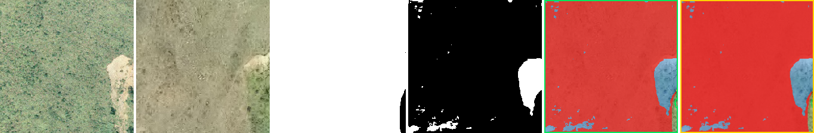
test_1760.png①去向：补漏候选 r = 0.096，k = 14，覆盖该连通域 39566 px · 目标面积 46116 px · 连通域 42336 px · 检测器对目标的覆盖率 8.1% · 裁块 y=0 x=0 边长 256，放大 1×
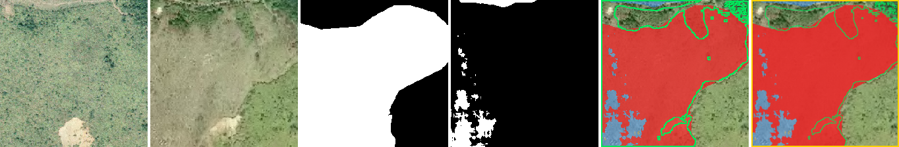
test_1764.png①去向：补漏候选 r = 0.099，k = 6，覆盖该连通域 35929 px · 目标面积 42034 px · 连通域 37941 px · 检测器对目标的覆盖率 9.6% · 裁块 y=0 x=0 边长 256，放大 1×
test_3692.png①去向：补漏候选 r = 0.056，k = 2，覆盖该连通域 6874 px · 目标面积 11797 px · 连通域 11526 px · 检测器对目标的覆盖率 2.3% · 裁块 y=0 x=0 边长 256，放大 1×
① → 精修（共 54 个连通域，抽 4 个）
test_1121.png①去向：精修候选 r = 0.310，k = 3，覆盖该连通域 3523 px · 目标面积 4513 px · 连通域 4251 px · 检测器对目标的覆盖率 5.8% · 裁块 y=0 x=0 边长 229，放大 1×
test_2036.png①去向：精修候选 r = 0.138，k = 1，覆盖该连通域 4981 px · 目标面积 8763 px · 连通域 7948 px · 检测器对目标的覆盖率 9.3% · 裁块 y=43 x=0 边长 213，放大 1×
test_3024.png①去向：精修候选 r = 0.124，k = 1，覆盖该连通域 142 px · 目标面积 157 px · 连通域 142 px · 检测器对目标的覆盖率 9.6% · 裁块 y=153 x=0 边长 64，放大 3×
test_731.png①去向：精修候选 r = 0.385，k = 2，覆盖该连通域 688 px · 目标面积 7091 px · 连通域 6398 px · 检测器对目标的覆盖率 9.7% · 裁块 y=0 x=0 边长 256，放大 1×
① → 未覆盖（共 0 个连通域，抽 0 个）
无。
② → 补漏（共 808 个连通域，抽 4 个）
test_1929.png②去向：补漏候选 r = 0.013，k = 5，覆盖该连通域 46 px · 目标面积 46 px · 连通域 46 px · 检测器对目标的覆盖率 0.0% · 裁块 y=40 x=192 边长 64，放大 3×
test_3264.png②去向：补漏候选 r = 0.000，k = 0，覆盖该连通域 116 px · 目标面积 133 px · 连通域 133 px · 检测器对目标的覆盖率 0.0% · 裁块 y=61 x=192 边长 64，放大 3×
test_3439.png②去向：补漏候选 r = 0.000，k = 0，覆盖该连通域 737 px · 目标面积 738 px · 连通域 738 px · 检测器对目标的覆盖率 0.0% · 裁块 y=186 x=186 边长 70，放大 3×
test_579.png②去向：补漏候选 r = 0.000，k = 0，覆盖该连通域 604 px · 目标面积 623 px · 连通域 623 px · 检测器对目标的覆盖率 0.0% · 裁块 y=0 x=86 边长 64，放大 3×
② → 精修（共 78 个连通域，抽 4 个）
test_1016.png②去向：精修候选 r = 0.418，k = 3，覆盖该连通域 2165 px · 目标面积 2208 px · 连通域 2208 px · 检测器对目标的覆盖率 0.0% · 裁块 y=0 x=162 边长 94，放大 2×
test_1102.png②去向：精修候选 r = 0.400，k = 2，覆盖该连通域 1172 px · 目标面积 1956 px · 连通域 1956 px · 检测器对目标的覆盖率 0.0% · 裁块 y=130 x=0 边长 126，放大 1×
test_3372.png②去向：精修候选 r = 0.594，k = 3，覆盖该连通域 4003 px · 目标面积 6007 px · 连通域 6007 px · 检测器对目标的覆盖率 0.0% · 裁块 y=97 x=0 边长 159，放大 1×
test_656.png②去向：精修候选 r = 0.265，k = 1，覆盖该连通域 617 px · 目标面积 836 px · 连通域 836 px · 检测器对目标的覆盖率 0.0% · 裁块 y=40 x=58 边长 88，放大 2×
② → 未覆盖（共 23 个连通域，抽 4 个）
test_167.png②去向：未覆盖没有候选覆盖 · 目标面积 89 px · 连通域 89 px · 检测器对目标的覆盖率 0.0% · 裁块 y=192 x=192 边长 64，放大 3×
test_1814.png②去向：未覆盖没有候选覆盖 · 目标面积 57 px · 连通域 57 px · 检测器对目标的覆盖率 0.0% · 裁块 y=192 x=0 边长 64，放大 3×
test_2028.png②去向：未覆盖没有候选覆盖 · 目标面积 120 px · 连通域 120 px · 检测器对目标的覆盖率 0.0% · 裁块 y=192 x=46 边长 64，放大 3×
test_741.png②去向：未覆盖没有候选覆盖 · 目标面积 151 px · 连通域 151 px · 检测器对目标的覆盖率 0.0% · 裁块 y=0 x=0 边长 64，放大 3×
③ 覆盖 10–30% → 补漏（共 46 个连通域，抽 4 个）
test_2381.png③ 覆盖 10–30%去向：补漏候选 r = 0.000，k = 0，覆盖该连通域 5298 px · 目标面积 13168 px · 连通域 11607 px · 检测器对目标的覆盖率 11.9% · 裁块 y=0 x=0 边长 256，放大 1×
test_354.png③ 覆盖 10–30%去向：补漏候选 r = 0.012，k = 1，覆盖该连通域 825 px · 目标面积 1140 px · 连通域 906 px · 检测器对目标的覆盖率 20.4% · 裁块 y=165 x=0 边长 91，放大 2×
test_3822.png③ 覆盖 10–30%去向：补漏候选 r = 0.067，k = 1，覆盖该连通域 1127 px · 目标面积 1305 px · 连通域 1157 px · 检测器对目标的覆盖率 11.3% · 裁块 y=0 x=160 边长 96，放大 2×
test_734.png③ 覆盖 10–30%去向：补漏候选 r = 0.071，k = 2，覆盖该连通域 4648 px · 目标面积 6926 px · 连通域 5160 px · 检测器对目标的覆盖率 18.1% · 裁块 y=0 x=0 边长 256，放大 1×
③ 覆盖 10–30% → 精修（共 206 个连通域，抽 4 个）
test_1333.png③ 覆盖 10–30%去向：精修候选 r = 0.433，k = 3，覆盖该连通域 22934 px · 目标面积 65536 px · 连通域 48049 px · 检测器对目标的覆盖率 26.7% · 裁块 y=0 x=0 边长 256，放大 1×
test_2089.png③ 覆盖 10–30%去向：精修候选 r = 0.313，k = 2，覆盖该连通域 445 px · 目标面积 922 px · 连通域 799 px · 检测器对目标的覆盖率 13.2% · 裁块 y=54 x=171 边长 85，放大 2×
test_2855.png③ 覆盖 10–30%去向：精修候选 r = 0.212，k = 2，覆盖该连通域 1021 px · 目标面积 1198 px · 连通域 1039 px · 检测器对目标的覆盖率 13.3% · 裁块 y=167 x=55 边长 81，放大 2×
test_889.png③ 覆盖 10–30%去向：精修候选 r = 0.400，k = 8，覆盖该连通域 6989 px · 目标面积 10077 px · 连通域 7319 px · 检测器对目标的覆盖率 27.3% · 裁块 y=0 x=0 边长 256，放大 1×
③ 覆盖 10–30% → 未覆盖（共 0 个连通域，抽 0 个）
无。
③ 覆盖 ≥ 30% → 补漏（共 112 个连通域，抽 4 个）
test_121.png③ 覆盖 ≥ 30%去向：补漏候选 r = 0.002，k = 0，覆盖该连通域 158 px · 目标面积 11260 px · 连通域 220 px · 检测器对目标的覆盖率 97.6% · 裁块 y=0 x=0 边长 217，放大 1×
test_1239.png③ 覆盖 ≥ 30%去向：补漏候选 r = 0.000，k = 0，覆盖该连通域 590 px · 目标面积 2725 px · 连通域 1197 px · 检测器对目标的覆盖率 56.1% · 裁块 y=142 x=138 边长 114，放大 1×
test_273.png③ 覆盖 ≥ 30%去向：补漏候选 r = 0.000，k = 0，覆盖该连通域 1242 px · 目标面积 9070 px · 连通域 2406 px · 检测器对目标的覆盖率 71.8% · 裁块 y=0 x=0 边长 256，放大 1×
test_3185.png③ 覆盖 ≥ 30%去向：补漏候选 r = 0.083，k = 2，覆盖该连通域 1568 px · 目标面积 3833 px · 连通域 1623 px · 检测器对目标的覆盖率 57.7% · 裁块 y=0 x=0 边长 217，放大 1×
③ 覆盖 ≥ 30% → 精修（共 7215 个连通域，抽 4 个）
test_26.png③ 覆盖 ≥ 30%去向：精修候选 r = 0.578，k = 1，覆盖该连通域 2976 px · 目标面积 12695 px · 连通域 8295 px · 检测器对目标的覆盖率 34.7% · 裁块 y=0 x=0 边长 256，放大 1×
test_3059.png③ 覆盖 ≥ 30%去向：精修候选 r = 0.854，k = 2，覆盖该连通域 50 px · 目标面积 40800 px · 连通域 50 px · 检测器对目标的覆盖率 99.6% · 裁块 y=0 x=0 边长 256，放大 1×
test_3122.png③ 覆盖 ≥ 30%去向：精修候选 r = 0.868，k = 1，覆盖该连通域 37 px · 目标面积 18973 px · 连通域 37 px · 检测器对目标的覆盖率 99.6% · 裁块 y=0 x=0 边长 256，放大 1×
test_799.png③ 覆盖 ≥ 30%去向：精修候选 r = 0.763，k = 1，覆盖该连通域 71 px · 目标面积 2442 px · 连通域 71 px · 检测器对目标的覆盖率 86.4% · 裁块 y=82 x=82 边长 174，放大 1×
③ 覆盖 ≥ 30% → 未覆盖（共 0 个连通域，抽 0 个）
无。
⑤ 残余 → 补漏（共 204 个连通域，抽 4 个）
test_1473.png⑤ 残余去向：补漏候选 r = 0.062，k = 1，覆盖该连通域 2 px · 目标面积 1494 px · 连通域 2 px · 检测器对目标的覆盖率 99.0% · 裁块 y=174 x=174 边长 82，放大 2×
test_1565.png⑤ 残余去向：补漏候选 r = 0.018，k = 1，覆盖该连通域 1 px · 目标面积 757 px · 连通域 1 px · 检测器对目标的覆盖率 74.0% · 裁块 y=146 x=114 边长 64，放大 3×
test_1760.png⑤ 残余去向：补漏候选 r = 0.096，k = 14，覆盖该连通域 11 px · 目标面积 46116 px · 连通域 11 px · 检测器对目标的覆盖率 8.1% · 裁块 y=0 x=0 边长 256，放大 1×
test_2100.png⑤ 残余去向：补漏候选 r = 0.061，k = 3，覆盖该连通域 2 px · 目标面积 1986 px · 连通域 2 px · 检测器对目标的覆盖率 66.3% · 裁块 y=100 x=123 边长 120，放大 1×
⑤ 残余 → 精修（共 8361 个连通域，抽 4 个）
test_1027.png⑤ 残余去向：精修候选 r = 0.986，k = 1，覆盖该连通域 7 px · 目标面积 15715 px · 连通域 7 px · 检测器对目标的覆盖率 98.2% · 裁块 y=0 x=0 边长 256，放大 1×
test_2645.png⑤ 残余去向：精修候选 r = 0.706，k = 2，覆盖该连通域 10 px · 目标面积 22624 px · 连通域 10 px · 检测器对目标的覆盖率 98.3% · 裁块 y=0 x=0 边长 256，放大 1×
test_3189.png⑤ 残余去向：精修候选 r = 0.449，k = 1，覆盖该连通域 6 px · 目标面积 257 px · 连通域 6 px · 检测器对目标的覆盖率 94.6% · 裁块 y=184 x=28 边长 72，放大 3×
test_3874.png⑤ 残余去向：精修候选 r = 0.986，k = 1，覆盖该连通域 1 px · 目标面积 11380 px · 连通域 1 px · 检测器对目标的覆盖率 81.3% · 裁块 y=0 x=0 边长 256，放大 1×
⑤ 残余 → 未覆盖（共 28 个连通域，抽 4 个）
test_2455.png⑤ 残余去向：未覆盖没有候选覆盖 · 目标面积 5 px · 连通域 5 px · 检测器对目标的覆盖率 0.0% · 裁块 y=114 x=192 边长 64，放大 3×
test_2618.png⑤ 残余去向：未覆盖没有候选覆盖 · 目标面积 5 px · 连通域 5 px · 检测器对目标的覆盖率 0.0% · 裁块 y=0 x=162 边长 64，放大 3×
test_638.png⑤ 残余去向：未覆盖没有候选覆盖 · 目标面积 3 px · 连通域 3 px · 检测器对目标的覆盖率 0.0% · 裁块 y=192 x=0 边长 64，放大 3×
test_903.png⑤ 残余去向：未覆盖没有候选覆盖 · 目标面积 3 px · 连通域 3 px · 检测器对目标的覆盖率 0.0% · 裁块 y=10 x=0 边长 64，放大 3×